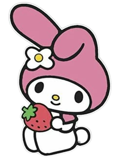

⭐ Hello Kitty ⭐
Hello Kitty is a Japanese Bobtail cat with white fur,
a yellow nose, black eyes, and three whiskers on each side of her
head, but no visible mouth. She is also five apples tall. She is great
at baking cookies. She enjoys playing the piano and collecting cute
things, and her favorite subjects in school are English, music, and
art.
⭐ My Melody ⭐

My Melody is a very cute white bunny. She is easily
recognized by her pink (or red) hood with a flower and her yellow
nose. She lives in the Mariland forest with her family. My Melody is
known for being optimistic, sociable, hardworking, and for loving to
bake almond cakes with her mother.
⭐ Kuromi ⭐
Kuromi is a white rabbit resembling My Melody with a
black imp tail, wearing a black jester's hat that features a pink
skull clip at the center of her forehead. Created as a rival to My
Melody, she is known for her rebellious and tomboyish attitude, but
also has a secretly girly side and a love for romance novels. Her name
means "black beauty," which reflects her dark but cute style.
⭐ Pompompurin ⭐
Pompompurin is a golden retriever dog who is known
for his laid-back and friendly personality. He loves eating pudding,
which is also his namesake, and is often seen wearing his signature
brown beret. Pompompurin enjoys napping and spending time with his
friends, making him a beloved character in the Sanrio universe.
⭐ Keroppi ⭐
Keroppi is a cheerful and energetic frog who lives in
Donut Pond with his family and friends. He is known for his
adventurous spirit and love of sports, especially swimming and
baseball. Keroppi has big round eyes, a V-shaped mouth, and wears a
red and white striped shirt. He enjoys exploring the outdoors and is
always up for a fun challenge.
⭐ Cinnamoroll ⭐
Cinnamoroll is a white puppy with long ears that
allow him to fly. He has big blue eyes, pink cheeks, and a curly tail
that resembles a cinnamon roll. Cinnamoroll is known for his sweet and
gentle nature, as well as his love for baking and eating pastries. He
lives in a magical cafe called Cafe Cinnamon, where he serves
delicious treats to his friends.
⭐ Badtz-Maru ⭐
Badtz-Maru is a mischievous little penguin with spiky
hair and a distinctive scowl. He is known for his rebellious attitude
and love for pranks, often getting into trouble with his friends.
Despite his tough exterior, Badtz-Maru has a soft spot for his family
and enjoys spending time with them. He dreams of becoming a rock star
one day.